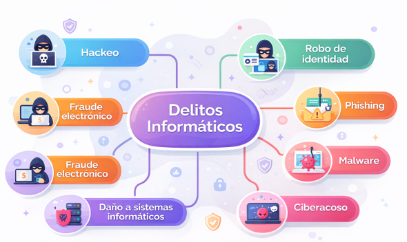

Leyes informáticas
Cuestionario
1. ¿Cuál es el propósito del derecho informático?
El derecho informático tiene como propósito regular el uso de las tecnologías de la información, proteger los datos personales, garantizar la seguridad de los sistemas y establecer sanciones cuando se cometen conductas ilícitas mediante medios digitales. También busca que el uso de la informática sea responsable y respetuoso de los derechos de las personas.
2. ¿Por qué piensas que el proceso de creación e inserción de leyes informáticas a la vida de una comunidad jurídica es largo y lento?
Porque la tecnología cambia constantemente y mucho más rápido que las leyes. Para crear una ley se necesita analizar el problema, debatirlo, redactarlo, aprobarlo y adaptarlo a la realidad social. Además, las autoridades deben asegurarse de que las nuevas normas no afecten otros derechos, como la libertad de expresión, la privacidad o el acceso a la información.
¿cómo han revolucionado las TIC la vida del ser humano ?
- Científico: facilitan la investigación, el intercambio de datos y el desarrollo de nuevas soluciones.
- Escolar: permiten clases virtuales, acceso a bibliotecas digitales y comunicación entre alumnos y docentes.
- Laboral: ayudan al trabajo a distancia, a la automatización y a una comunicación más rápida.
- Entretenimiento: transformaron la manera de jugar, ver series, escuchar música y convivir en línea.
- Relaciones sociales: permiten mantener contacto inmediato con personas de cualquier lugar por medio de redes sociales y mensajería.
los 6 tópicos más importantes que ameritan una regulación especial para ser analizados en la legislación informática en México.
- Protección de datos personales.
- Delitos informáticos.
- Comercio electrónico.
- Propiedad intelectual en medios digitales.
- Seguridad informática y acceso a sistemas.
- Uso de internet, redes sociales y responsabilidad digital.
¿Qué es la tipicidad?
La tipicidad es el elemento del delito que consiste en que una conducta realizada por una persona coincida exactamente con la descripción que marca la ley penal. Es decir, para que un acto sea castigado, primero debe estar previsto en la ley como delito.
Tabla comparativa de TIC (2016 vs 2026)
| No. | Tecnología TIC | 2016 (características, conductas, riesgos) | 2026 (características, conductas, riesgos) |
|---|---|---|---|
| 1 | Redes sociales | Uso masivo, pero menor control de datos; ciberbullying básico | Desinformación masiva, deepfakes y manipulación social con IA (IT Masters Mag) |
| 2 | Correo electrónico | Phishing simple (mensajes evidentes) | Phishing con IA, suplantación casi perfecta (voz, texto) (Splashtop Inc.) |
| 3 | Computación en la nube | Inicio del uso empresarial; riesgos por mala configuración | Exposición de datos por APIs y multi-nube compleja (Splashtop Inc.) |
| 4 | Dispositivos móviles | Vulnerabilidades en apps y SMS | Ataques de identidad, spyware avanzado y rastreo constante |
| 5 | Internet de las Cosas (IoT) | Dispositivos inseguros (cámaras, routers) | IoT masivo con fallas críticas en hogares inteligentes (Splashtop Inc.) |
| 6 | WiFi / redes inalámbricas | WPA2 vulnerable, ataques de red local | Redes híbridas y públicas con mayor exposición y espionaje |
| 7 | Big Data | Recolección masiva de datos sin regulación clara | Explotación de datos personales y vigilancia digital intensiva |
| 8 | Comercio electrónico | Fraudes básicos con tarjetas | Robo de identidad digital y fraudes automatizados |
| 9 | Sistemas operativos | Malware tradicional (virus, gusanos) | Malware inteligente y adaptable con IA (IEBS School) |
| 10 | Plataformas de streaming | Piratería digital | Manipulación de contenido y propaganda digital |
| 11 | Mensajería instantánea | Spam y cadenas falsas | Ingeniería social avanzada y fraudes personalizados |
| 12 | Inteligencia Artificial | Uso limitado en empresas | Uso masivo en ataques, automatización de cibercrimen (Splashtop Inc.) |
| 13 | Blockchain | Tecnología emergente (criptomonedas) | Estafas, fraudes financieros y lavado digital |
| 14 | Videoconferencias | Uso limitado | Espionaje, filtración de datos en reuniones virtuales |
| 15 | Redes 4G / telecomunicaciones | Vulnerabilidades en LTE (rastreo) (arXiv) | Infraestructura crítica con riesgos geopolíticos y ciberataques (EY) |
| 16 | Software como servicio (SaaS) | Dependencia moderada | Riesgos en cadena de suministro y terceros (Splashtop Inc.) |
| 17 | Videojuegos en línea | Hackeo de cuentas | Robo de identidad, grooming y fraude digital |
| 18 | Plataformas educativas | Uso básico | Robo de datos personales y ataques a sistemas escolares |
| 19 | Bases de datos digitales | Filtraciones ocasionales | Brechas masivas de datos (millones de usuarios) |
| 20 | Sistemas de autenticación | Contraseñas simples | Ataques a identidad, biometría vulnerable y robo de credenciales (Splashtop Inc.) |
Mapas conceptuales
Mapa conceptual 1

Conceptos que conforman el marco jurídico del derecho informático
Conceptos básicos
¿Qué es una norma?
Una norma es una regla de conducta que orienta el comportamiento de las personas dentro de una sociedad. Su finalidad es mantener el orden y establecer lo que se debe o no se debe hacer.
¿Qué es una ley?
Una ley es una norma jurídica obligatoria creada por una autoridad competente. Debe ser cumplida por todas las personas dentro del territorio donde tiene validez.
¿Qué entiendes por CNDH?
La CNDH es la Comisión Nacional de los Derechos Humanos. Es un organismo que protege, observa y promueve los derechos fundamentales de las personas en México.
Conceptos del derecho informático
El derecho informático es la rama del derecho que estudia y regula los efectos jurídicos que surgen por el uso de computadoras, internet, sistemas de información, bases de datos y medios electrónicos.
¿Qué entiendes por Derecho informático?
Se entiende como el conjunto de normas, principios y disposiciones legales que regulan el uso de la tecnología, la protección de la información y las responsabilidades derivadas del uso de medios digitales.
Conceptualiza el marco normativo que rige al mismo
El marco normativo del derecho informático está formado por leyes, reglamentos, normas oficiales y principios jurídicos que protegen la privacidad, la seguridad de la información, la identidad digital y la legalidad de las operaciones electrónicas.
Asocia dichos elementos al ámbito de la función informática
En la función informática se aplican para controlar accesos, proteger bases de datos, autenticar usuarios, prevenir delitos, respetar la propiedad intelectual y garantizar el uso responsable de los recursos tecnológicos.
Autenticación de usuarios
Es el proceso mediante el cual se comprueba la identidad de una persona en un sistema informático, por ejemplo, con contraseña, huella digital, código o reconocimiento facial.
Acceso de usuarios
Se refiere a los permisos o niveles de autorización que tiene una persona dentro de un sistema, plataforma o red para consultar, modificar o administrar información.
Derecho Civil
Es la rama del derecho que regula las relaciones entre particulares, como contratos, obligaciones, daños y responsabilidades. En informática puede aplicarse en contratos digitales, compras en línea y uso de servicios tecnológicos.
Derecho Penal
Es la rama del derecho encargada de castigar conductas consideradas delitos. En informática se relaciona con hackeo, fraude electrónico, robo de identidad y acceso ilícito a sistemas.
¿A qué se refiere la informática jurídica?
La informática jurídica consiste en aplicar herramientas tecnológicas al ámbito del derecho para organizar información legal, consultar leyes, administrar expedientes y agilizar procesos jurídicos.
Enlista 6 delitos informáticos que conozcas
- Hackeo o acceso no autorizado.
- Phishing.
- Robo de identidad.
- Fraude electrónico.
- Ciberacoso.
- Daño a sistemas o propagación de malware.
1.1 Identifica el marco jurídico del derecho informático relativo al manejo de la información y a la función del usuario, conforme a las leyes, normas y principios mexicanos.
A. Definición del sistema de derecho informático
Informática jurídica.
La informática jurídica es la aplicación de herramientas tecnológicas en el campo del derecho. Sirve para organizar, almacenar, consultar y analizar información legal, como leyes, jurisprudencias, expedientes y documentos jurídicos, facilitando el trabajo de abogados, jueces e instituciones.
Derecho informático.
El derecho informático es la rama del derecho que estudia y regula las consecuencias jurídicas derivadas del uso de la informática, internet, bases de datos, sistemas digitales y tecnologías de la información. Su finalidad es establecer normas para proteger la información, la privacidad y el uso adecuado de los medios tecnológicos.
Política informática.
La política informática es el conjunto de reglas, lineamientos y medidas establecidas para orientar el uso correcto, seguro y responsable de los recursos tecnológicos dentro de una institución, empresa o sistema. Su propósito es prevenir riesgos, proteger la información y asegurar el cumplimiento de normas en el entorno digital.
Legislación informática.
La legislación informática es el conjunto de leyes, reglamentos y disposiciones jurídicas que regulan el uso de la tecnología, los sistemas informáticos, internet y la información digital. Su función es establecer derechos, obligaciones y sanciones relacionadas con las conductas realizadas en medios electrónicos.
B. Identificación de delitos y/o faltas administrativas aplicables al usuario
Identificación de delitos y/o faltas administrativas aplicables al usuario.
Se refiere a reconocer las acciones ilegales o indebidas que una persona puede cometer, especialmente en el uso de tecnología o internet, y que pueden tener sanciones legales o administrativas.
Artículo 6 de la Constitución (Derecho de información).
Establece que todas las personas tienen derecho a acceder a la información pública y a buscar, recibir y difundir información por cualquier medio.
Artículo 8 de la Constitución (Derecho de petición).
Indica que los ciudadanos pueden hacer solicitudes a las autoridades, y estas deben responder en un tiempo razonable.
Artículo 7 de la Constitución (Libertad de expresión).
Garantiza que todas las personas pueden expresar ideas y opiniones sin censura previa, siempre respetando la ley.
Artículo 16 de la Constitución (Derecho a la privacidad).
Protege la vida privada de las personas, sus datos personales y comunicaciones, evitando que sean revisadas sin autorización legal.
Artículo 285 del Código Penal Federal.
Se refiere a delitos relacionados con el uso indebido de información o sistemas, como el acceso ilegal a sistemas informáticos.
Artículo 576 del Código Penal Federal.
Establece sanciones para delitos graves relacionados con el uso de tecnologías, como la alteración o destrucción de información digital.
La criptografía y su legislación.
Es el conjunto de técnicas para proteger información mediante códigos. La legislación regula su uso para garantizar seguridad y evitar delitos.
La firma electrónica y su legislación.
Es un método digital que permite identificar a una persona y validar documentos electrónicos. Está regulada para que tenga validez legal.
Criptografía asimétrica.
Es un tipo de cifrado que usa dos claves: una pública para cifrar y una privada para descifrar, aumentando la seguridad.
Función Hash.
Es un algoritmo que convierte datos en un código único. Se usa para proteger contraseñas y verificar la integridad de la información.
Beneficios de la firma electrónica.
Permite firmar documentos de forma segura, ahorrar tiempo, evitar el uso de papel y garantizar autenticidad y validez legal.
Certificado digital.
Es un archivo electrónico que confirma la identidad de una persona o empresa en internet, y se utiliza en firmas electrónicas.
Agencias certificadoras en México.
Son entidades autorizadas que emiten certificados digitales, como el SAT, para validar identidades en línea.
Fundamentos legales.
Son las bases jurídicas que regulan el uso de tecnologías, información, firmas electrónicas y protección de datos.
C. Definiciones de datos y conceptos relacionados
Datos personales.
Son todos aquellos datos que permiten identificar a una persona física, ya sea de manera directa o indirecta. Incluyen información básica como el nombre completo, dirección, número telefónico, correo electrónico, CURP o cualquier otro dato que pueda asociarse con una persona específica. Estos datos deben ser protegidos para evitar su mal uso o robo.
Datos sensibles.
Son un tipo especial de datos personales que revelan aspectos íntimos de una persona. Su uso indebido puede generar discriminación o poner en riesgo la seguridad del individuo. Incluyen información como el estado de salud, creencias religiosas, opiniones políticas, orientación personal o datos biométricos como huellas digitales.
Base de datos.
Es un conjunto organizado de datos que se almacenan de manera estructurada para facilitar su consulta, acceso y actualización. Puede estar en formato digital o físico. Las bases de datos son utilizadas en escuelas, empresas y gobiernos para administrar información de manera eficiente.
Tratamiento de datos.
Se refiere a cualquier operación o conjunto de operaciones realizadas sobre datos personales. Esto incluye la recolección, almacenamiento, organización, modificación, consulta, uso, transmisión o eliminación de la información. El tratamiento debe realizarse de forma responsable y conforme a la ley.
Sujeto activo.
Es la persona que realiza una acción ilegal o comete un delito informático. Puede tratarse de alguien que accede sin autorización a sistemas, roba información o altera datos.
Sujeto pasivo.
Es la persona, empresa o institución que resulta afectada por un delito informático. Es quien sufre las consecuencias del robo, daño o mal uso de su información.
Robo de datos.
Consiste en la obtención, copia o sustracción de información sin el consentimiento del propietario. Este delito puede realizarse mediante hackeo, engaños o acceso ilegal a sistemas informáticos.
Acceso no autorizado.
Se refiere a ingresar a sistemas, redes, cuentas o bases de datos sin contar con los permisos necesarios. Es una de las formas más comunes de delitos informáticos y puede causar graves daños.
Hackers.
Son personas con conocimientos avanzados en informática que pueden acceder a sistemas digitales. Existen hackers éticos que ayudan a mejorar la seguridad y hackers maliciosos que buscan robar información o causar daño.
Virus informático.
Es un programa o software malicioso diseñado para alterar el funcionamiento de un sistema, dañar archivos o robar información. Puede propagarse a través de internet, correos electrónicos o dispositivos externos.
Tipos de virus.
Existen diferentes tipos de malware: los gusanos que se replican automáticamente, los troyanos que se disfrazan de programas legítimos y el ransomware que bloquea archivos y exige un pago para liberarlos.